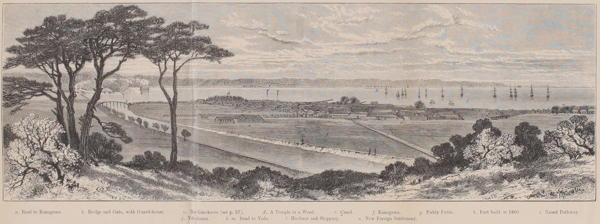

“View of Yokuhama from the hills behind the town”
Yedo and Peking (1863)
When the American squadron first visited Yokuhama in 1854, it was but a small fishing village, containing probably not more than 1000 inhabitants. Now the population amounts to 18,000 or 20,000, and a large town covers a space which was formerly occupied by rice-fields and vegetable gardens. The town is built on the flat land which extends along the shores of the bay, and is backed by a kind of semicircle of low richly-wooded hills. It is about a mile long, and a quarter to half a mile in width but it is increasing rapidly every day, and no doubt the whole of the swamp which lies between it and the hills will soon be covered with buildings.
A large customhouse has been erected near the centre of the town, the foreign allotments being on the east side of it, and the native town chiefly on the west, so that foreigners and natives are kept each by themselves. A broad and deep canal has been dug round the town, and is connected with the bay at each end. It will be seen, therefore, that with the sea in front, and this canal carried round behind, the place can easily be completely isolated. Guardhouses are placed at the points of egress, and no one can go out or come in without the knowledge of the guards, and consequently of the Government. As I have already hinted, the Japanese have been much abused for this arrangement; but it is possible, indeed I think it highly probable, that it has been intended more for our protection than for anything else.
Yedo and Peking (1863)
The Gan-ke-ro ... is a large building at the back of the town, erected by the Government for the amusement of foreigners. Here, dinners, suppers, and plays, can always be “got up on the shortest notice.” In other respects this and the buildings in the surrounding neighbourhood are much like the tea-houses in the town of Nagasaki. Scenes of debauchery and drunkenness are common, and even murder is not infrequent. Over such matters one would willingly draw a veil; but truth must be told in order to correct the impression which some persons have of Japan—namely, that it is a very Garden of Eden, and its inhabitants as virtuous as Adam and Eve before the fall.
Yedo and Peking (1863)
The most beautiful part of the city is the bluff. Across the bridge, near the mission-house, the road leads along the bank of a canal for a few steps, and then, making a sudden turn, takes its course up the hill, which rises gradually to about two hundred feet above the level of the ocean and extends several miles. This road is very pretty, with embankments on one side, and on the other views of the Buddhist cemeteries, and occasional glimpses of the sea. The foreign residences on the bluff are very pleasant, and some are even elegant. Here also are tea-houses, where we can sit and enjoy the view of the settlement and the harbor whilst drinking the cup of tea which is always offered to the casual visitor by the smiling Japanese girl.
The foreign cemetery on the bluff is a sweet, quiet spot, more home-like than anything else in this strange land.
In the native city the principal street is called Curio street by the foreigners, and To-ri by the natives. Here the curious China lacquer and native woodenware are temptingly arranged.
The Sunrise Kingdom (1879)
In the two days that have passed since my arrival I have seen much of Yokohama, and my appetite for sightseeing seems to grow with every hour. Our friends have gone to the races. This is a sort of holiday with the foreign population of Yokohama. As it is an English or American, rather than a Japanese institution, I shall, instead of going to the grounds, devote this afternoon to letter writing.
We are very comfortably fixed at the Grand Hotel. If the dining-room is not a Babel in the way of noise, it is one so far as a “confusion of tongues” can go to make it so. It seems to be a gathering place for specimens (not always of the choicest) of all sorts of nationalities; for you can meet Americans, Englishmen, Frenchmen, Germans, Dutch, Spaniards, Russians, Hindoos and even Armenians there. The servants are Japanese, the steward is a Chinaman who speaks excellent French, the clerk in charge of the office is Portuguese, the comprador is of course a Chinaman and, if I remember rightly, the night watchman is a Wallachian.
Jottings of Travel in China and Japan (1888)
I am not in the habit of running to fires in Philadelphia, but I have just witnessed one here, and found much entertainment in the spectacle, although when I got back to the hotel I found that an intaglio that I had worn attached to my watch chain had parted company with me whilst in the crowd.
Shortly after luncheon I went to the Japanese suburban village of Homura, to make a small purchase. I had finished my business and was examining some painted screens which the polite shopkeeper was showing me, when a young girl rushed into the shop to inform him that there was a fire. Without another word, he left me, hurriedly exchanged his straw sandals for wooden ones, and darted down the street. Curious to see how they order these things in Japan, I followed him, and was soon one of the motley crowd that rushed over the bridge connecting Homura with Yokohama.
The fire was in Chinatown, in the establishment of a shoemaker, opposite to Mr. Cock-Eye’s tailor shop and next door to Mr. Ah-Why’s carpenter shop. It was a sort of sailors’ quarter, and close by were quite a number of low-looking places with high sounding titles, such as Café de l’Univers, Boulangerie Provençale, A la descente des Marins, etc. Chinese shopkeepers, Japanese men, women and babies, Chinese and Japanese coolies, American sailors, and an assorted lot of Europeans, helped to make up the crowd. With the exception of the Germans and Americans who belong to the fire company, all were more or less excited. Japanese policemen, clad in white duck uniforms, were present in large numbers, and were running hither and thither as if bewildered. There were also several Japanese bearing long poles, at the top of which there was a painted cube or sphere, from which strips of paper were hanging. These devices were to represent the fire-god, whose presence is expected to put out the fire; or, that failing, to prevent its extending.
The crowd was a docile one and was easily kept outside of the line. When I had spent some time watching the Chinamen bringing their effects out of the burning building, and was wondering how they had managed to stow away so much trash in so small a place, they were still at it. Finally, when the house was destroyed there came a party with long bamboo ladders, which they rested against the next building, and, without any apparent reason, for the danger was over, they clambered up and down like so many monkeys. Fires usually do great damage in such towns as this, and thus the excitement is easily accounted for. I would have been sorry to miss seeing the crowd, which was interesting because of the varied elements of which it was composed.
Jottings of Travel in China and Japan (1888)
Yokohama is perhaps, one of the least interesting of Japanese cities, as it is essentially a modern European settlement, around which a native town has grown. There are large hotels, tempting curio shops, bazaars, banks, post office, etc., which are uninteresting to the sightseer in Japan. One’s curiosity and interest in these are soon exhausted.
Impressions of a Journey Round the World (1897)
◀ Shimonoseki